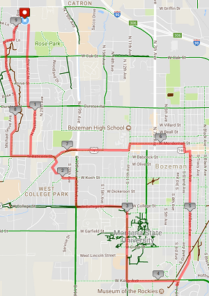
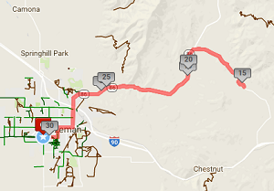
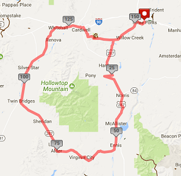

Our Tours
9.30 MI FIXED GEAR
This is a 9.3 mi Bike Ride in Bozeman, MT, United States. The Bike Ride has a total ascent of 026 ft and has a maximum elevation of 4,952.82 ft.
Jason Creek
This is a 30.32 mi Bike Ride in Bozeman, MT, United States.
LAP AROUND THE TOBACCO ROOTS
This is a 154.34 mi Bike Ride in Three Forks, MT, United States. The Bike Ride has a total ascent of 4623.18 ft and has a maximum elevation of 6,924.15 ft.